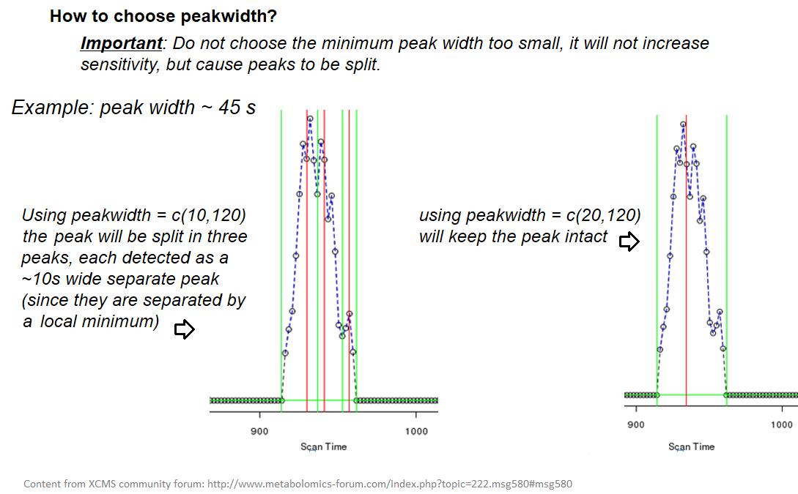

Mass spectrometry: LC-MS preprocessing - advanced
Contributors
 Jean-François Martin
Jean-François Martin  Mélanie Petera
Mélanie Petera
last_modification Last modification: Aug 10, 2021
raw-to-matrix
From raw files to data matrix
![Picture representing steps from the raw data to the peak table, each step being linked to the next one by an arrow. Step 1 is a graphic showing a TIC for on sample. Step 2 is a part of an XML file where fields as retention time, base peak m/z, and base peak intensity are noticeable. Step 3 is an example of MS spectrum with the mention that an MS spectrum can be found at each scan. Step 4 (last one) is a part of a spreadsheet table listing ions in lines with 2 "retention time" and "mass" columns, plus columns of intensities (one per sample).](../../images/lcmspreproc_slides_1.1.png)
XCMS
![Picture to introduce the XCMS R package by providing the reference to the main publications, providing a link to the web documentation https://bioconductor.org/packages/release/bioc/html/xcms.html and highlighting with happy/sad faces some characteristics. Happy face for "R based", "free" and "sustainable". Sad face for "a lot of parameters to set", "no graphical interface", and "need to write an R script". A picture from one a the publication is displayed, corresponding to a graphic showing many overlapping line graphs pointing to a single peak.](../../images/lcmspreproc_slides_1.2.png)
findchrompeaks
xcms - findChromPeaks
xcms - findChromPeaks - CentWave algorithm
![On the left, part of an xml file is shown with retention time, base peak m/z and base peak intensity highlighted. On the right there are three graphs having scans as abscissa for the three of them. From top to bottom: m/z values with the note "looking for a region of interest", delta ppm scan-to-scan with the label "ppm parameter", and then at the bottom an intensity graph specifying that a continuous wavelet transform is performed. References of Signal/Noise, Noise level, Pre-filter, Range of FWHM (peakwidth) and choice between integration and peak heigh are listed with the bottom graph. This example is given for 1 ion in 1 sample, defined by m/z, retention time and intensity.](../../images/lcmspreproc_slides_2.2.png)
xcms - findChromPeaks - CentWave algorithm
![Large blob of text next to two plots from one of XCMS publication. First blob: "The algorithm aims to detect mass traces or regions of interest (ROI) which are defined as regions with less than a defined deviation of m/z in consecutive scans. The deviation must be lower than the value of the parameter ppm. The value (unit ppm) has to be set according to MS accuracy. The graph to the right shows a region with some points with low variation along the y axis, and as it goes to the sides of this central region, the variation increases." Second blob: "ROI mass intensitites are then used to define the chromatographic peak with continuous wavelet transform algorithm. peakwidth(min, max) has to be set for this step. 20.50 for HPLC, 5.25 for UPLC"](../../images/lcmspreproc_slides_2.3.png)
xcms - findChromPeaks - CentWave algorithm

xcms - findChromPeaks - CentWave algorithm

xcms - findChromPeaks - CentWave parameters

xcms - findChromPeaks - Parameters summary
| xcms parameters | related to | description | examples |
|---|---|---|---|
| ppm | m/z | fluctuation of m/z value (ppm) from scan to scan - depends on the mass spectrometer accuracy | 5… |
| peakwidth | retention time | range of chromatographic peak width (second) | UPLC 10,40 / HPLC 20,120 |
| mzdiff | m/z and retention time | minimum difference of m/z for peaks with overlapping retention time (coeluting peak) - must be negative to allow overlap | -0.001 or 0.05 |
| prefilter (k, I) | Intensity | a peak must be present in k scans with an intensity greater than I | k=3,I=1000 |
| snthresh | Intensity | signal/noise ratio threshold | 5… |
| noise | Intensity | each centroid must be greater than the “noise” value | . |
groupchrompeaks
xcms - groupChromPeaks
![Large set of tables, in three groups, with each time 3 tables representing 3 pools. The top row is labelled "independent peaklists". The next row of tables is labelled "group ions by m/z", and the rows in the tables are coloured based on m/z values and lined up by their colours. The third row is labelled "group by retention time", and the coloured rows are now merged into one big table, each colour on its own row, with this time some blue in two shades (same m/z but different rt). The resulting matrix merges the above, and collapses columns to result in a median m/z, and median retention time, and then the intensity of each pool; "NA" are filled when the line (a given m/z with a given rt) was missing for some pools.](../../images/lcmspreproc_slides_3.1.png)
xcms - groupChromPeaks - Alignment group
![Another text blob and image combo. The text: "First, a binning of mass domain is performed. The size of the bin defined by the width of overlapping m/z slices. Then for each m/z bin, all ions of all samples are taken into account on the whole. A kernel density estimator is used to detect regions of retention time with high density ions." Below, the graph shows an example of plot output from groupChromPeaks which represents peaks found in samples as points along the retention time for one m/z slice.](../../images/lcmspreproc_slides_3.2.png)
xcms - groupChromPeaks - Alignment group
![Similar text/image combo as the previous slide. The text: "A guassian model groups together peaks with similar retention time, the inclusiveness of ions in a group defined by standard deviation of the model (bandwidth) corresponding to the xcms bw parameter." The graphic shows the previous plot with added information. A guassian density curve is drawn and vertical dot lines are plotted each time a peak is considered along the rt. A "problem" is highlighted showing an outlier point included in a peak because the bw parameter was too high.](../../images/lcmspreproc_slides_3.3.png)
xcms - groupChromPeaks - Alignment group

xcms - groupChromPeaks - minFraction parameter
![A text indicates: "minfraction is the minimum number of samples detected in at least one class to be considered a valid group. A class is defined by the second column of the sample metadata if you uploaded individual sample files and merge in a dataset list, or by the sub folder of the zipfile." An illustration is provided using two plots modeling a peak from the type of output groupChromPeaks generates. It plots the points in two colours (red and blue), representing groups of samples. There are theoritically 4 samples in each class (=color) and the minFraction parameter is set to 0.5. On the first plot, there are 3 and 4 points in each color, so the peak is kept. On the second plot, there are 1 and 3 points in each color, but the peak is still kept since there are 3 points in at least one group.](../../images/lcmspreproc_slides_3.5.png)
xcms - groupChromPeaks - Output

xcms - groupChromPeaks - Output

xcms - groupChromPeaks - Parameters summary
| xcms parameters | related to | description | examples |
|---|---|---|---|
| binSize | m/z | Size of m/z slices (bins). Range of m/z to be included in a group. Depends on mass spectrometer accuracy. |   |
| bw | retention time | Standart deviation of the gaussian metapeak that group peaks together. | HPLC 30s / UPLC 5s |
| minFraction | samples | To be valid, a group must be found in at least minFraction*n samples, with n=number of samples for each class of samples. A minFraction=0.5 corresponds to 50%. | n=10, minFraction=0.5 => found in at least 5 samples |
| max | number of ions | Maximum number of groups detected in a single m/z slices. | 10 or 50 |
adjustrtime
xcms - adjustRtime

xcms - adjustRtime - PeakGroups algorithm

xcms - adjustRtime - PeakGroups - Parameters summary
| xcms parameters | related to | description | examples |
|---|---|---|---|
| smooth method | retention time | Regression model to model time deviation among samples (linear or loess). | linear or loess |
| span |   | Degree of smoothing of the loess model. | 0.2 to 1 |
| extraPeaks | samples | Number of “extra” peaks used to define reference peaks (or well-behaved peaks) for modeling time deviation. Number of Peaks > number of samples. | default=1 |
| minFraction (previously missing) | samples | Minimum proportion of samples with reference peaks. If blank samples are used, minFraction < (1 - proportion of blanks). | 1 - proportion of blank samples |
xcms - adjustRtime - Obiwrap algorithm
beforeafterrt
xcms - adjustRtime - Output
![A "before/after" picture related to the rt adjustment. In the first graph two messy lines of points are shown. It seems to be two ions, but because there are shifts in rt it is not possible to separate them, whatever the bw value. The graph is labelled with two boxes saying "bandwith (bw) = 8 seconds" and "Effect of retention time correction and BW". The second graph is after rt ajustment. Now the peaks points line up perfectly into two individual peaks and thus an appropriate bw value allows to separate the two peaks correctly. The graph is labelled with two boxes, saying "Bandwith (bw) = 5 seconds" and "Two distinct ions are separated by decreasing bandwith value. And outliers are not taken into account".](../../images/lcmspreproc_slides_5.png)
fillchrompeaks
xcms - fillChromPeaks
![A montage of a table with some NA values in intensities and the fillChromPeaks Galaxy tool with a text: "After grouping all ions are not detected in all samples. For each of those ions this step integrates the signal in the region where ions were detected in other samples and creates a new peak. Be careful, if you choose a low minfraction in the group step, you may have a lot of missing data and this can lead to crash this step." In addition to the text, formulas are represented in a mathematical form for each "Advanced options" of the Galaxy module. There is also a note about the intval parameter saying into=integration, maxo=maximum height and intb=integration with baseline correction.](../../images/lcmspreproc_slides_6.png)
Thank you!
This material is the result of a collaborative work. Thanks to the Galaxy Training Network and all the contributors! This material is licensed under the Creative Commons Attribution 4.0 International License.
This material is licensed under the Creative Commons Attribution 4.0 International License.